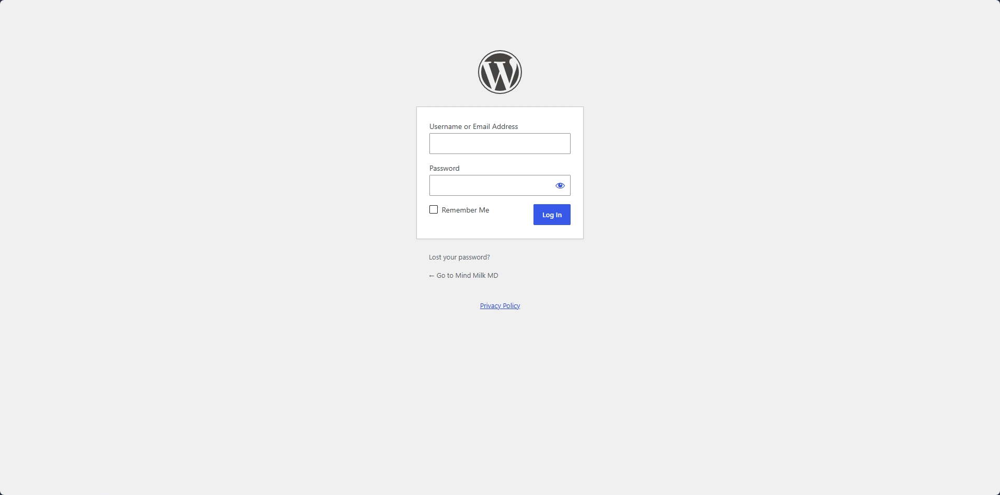
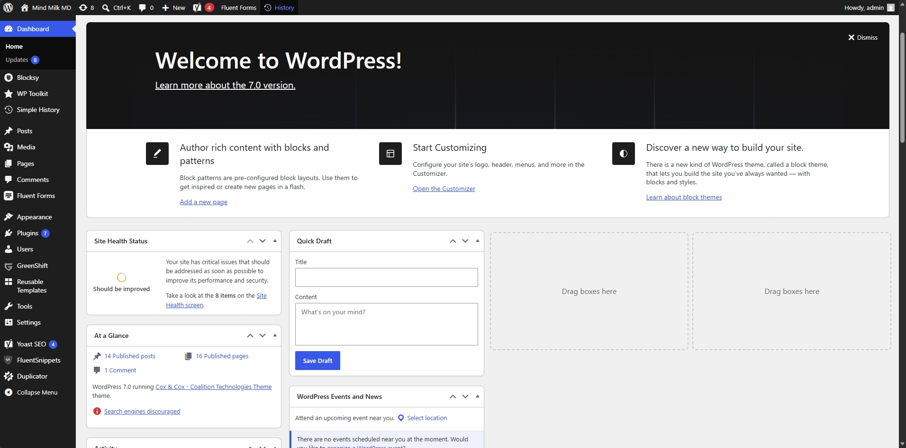
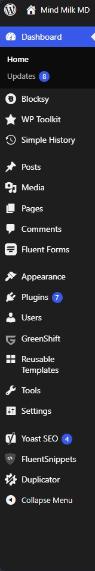
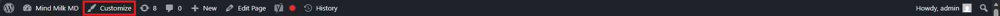
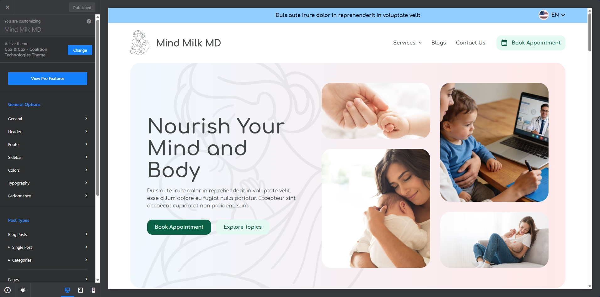
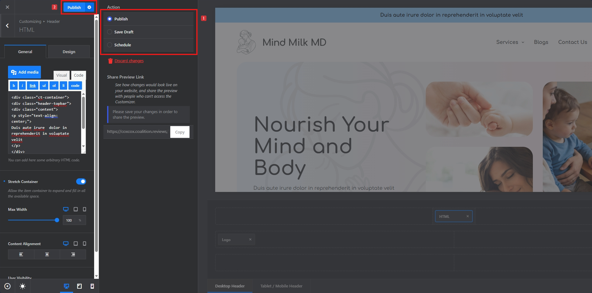

Welcome to Nelson Day Electrical WordPress Documentation by Coalition Technologies
What is WordPress?
WordPress is a Content Management System (CMS) - a tool that lets you build and manage a website without needing to write code. You create and edit content through a visual admin panel, and WordPress handles displaying it to your visitors.
How WordPress Works
WordPress has two sides you need to know:
- Backend (the Dashboard) - where you log in to manage content, change settings, and control how the site works. Only you and your team can see this.
- Frontend (the public website) - what your visitors see when they browse your site at its URL.
Think of it like a restaurant: The backend is the kitchen where everything is prepared. The frontend is the dining area where customers see and enjoy the final result.
Posts vs Pages
New WordPress users often wonder when to use a Post vs a Page. Here's the difference:
| Posts | Pages | |
|---|---|---|
| Used for | Blog articles, news, updates | Static content like "About Us", "Contact" |
| Organized by | Categories & tags | Hierarchical (parent/child) |
| Shown on | Blog listing page | Individual URLs |
| Timely? | Yes - dated, reverse order | No - timeless content |
Tech Stack
- WordPress (CMS)
- Greenshift (free theme)
- Greenshift (free plugin)
Designed Pages
WordPress Login
Before proceeding, make sure you are logged into the WordPress backend. Use the following URL to log in:
Login Path: site.com/wp-login.php

WordPress Dashboard
Once logged in, you will see the following screen:

The dashboard is the WordPress backend where all site settings - both appearance and functionality - are managed.
Note: Some menu items may be hidden based on your user role. Only Administrators see all options.
Dashboard Sidebar Menu:

Here's a quick description of the menu items available in the left sidebar, these menu items will be used to navigate between site options:
- Dashboard: Shows your at-a-glance admin home screen and core update alerts.
- Posts: Where you create, edit, and organize blog posts using categories and tags.
- Media: Your library for uploading, storing, and managing images, videos, and documents.
- Pages: Where you create and manage static pages like "About Us," "Contact," or your Homepage.
- Comments: Where you moderate, reply to, or delete visitor comments on your posts.
- Appearance: Where you change your website's visual theme, customize layouts, and edit menus.
- Plugins: Where you install and manage add-ons that expand your site’s functionality (e.g., SEO, e-commerce).
- Users: Where you manage accounts, assign roles (like Editor or Administrator), and edit user profiles.
- Tools: Includes features to import/export data, erase personal data, and manage site health.
- Settings: Where you configure global parameters for your site, including general URL details, reading/writing preferences, and discussion rules.
WordPress Customizer
The WordPress Customizer lets you modify site and theme settings such as colors, typography, and layout. Access it via the Customizer icon in the admin toolbar:
Note: You will need to be logged into the site for the admin toolbar to appear.


Publish Customizer Changes
Changes you make in the Customizer are not live on the site until you publish them. Here's how:
Note: Any changes made in the customizer would count as a change and needs to be published to reflect on the live site.
- Publish — Click the Publish button at the top of the Customizer panel to push all your changes live immediately.
- Save Draft — Use the gear icon next to the Publish button to save your changes as a draft without making them public.
- Schedule — You can also schedule your changes to go live at a specific date and time.
Important: If you navigate away without publishing, your unsaved changes will be lost.

Clicking the Gear icon next to the publish button, will open up a panel which will display all the above options. You can skip the step marked as 1 in above image, if you don't plan on drafting or sceduling the changes but to directly publish them.
Dashboard vs Customizer
New users often confuse these two. Here's the difference:
| Dashboard | Customizer | |
|---|---|---|
| Purpose | Manage content & site settings | Change the visual appearance |
| What you do | Create posts, upload media, install plugins | Edit colors, fonts, layout, menus |
| Live preview? | No | Yes - see changes in real-time |
| Access from | site.com/wp-admin | Admin toolbar → Customize |
Quick Reference: Common Tasks
| I want to… | Go to |
|---|---|
| Write a blog post | Dashboard → Posts → Add New |
| Edit a page | Dashboard → Pages → click the page |
| Upload an image | Dashboard → Media → Add New |
| Change colors or fonts | Customizer → Colors / Typography |
| Add a navigation menu item | Customizer → Menus |
| Install a new plugin | Dashboard → Plugins → Add New |
| Add a new user | Dashboard → Users → Add New |
| Change the site title | Customizer → Site Identity |
Useful URLs
- Login URL: site.com/wp-login.php
- Customizer URL: site.com/wp-admin/customize.php